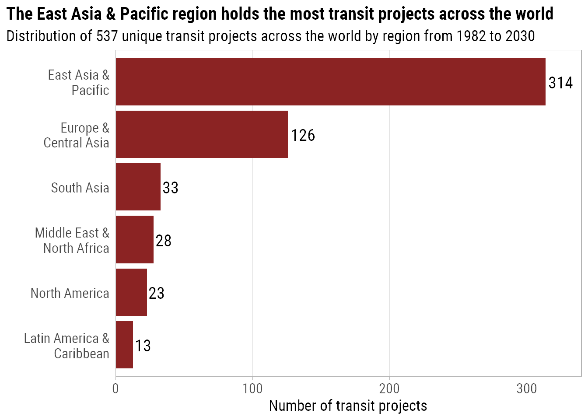

This blog post will be exploring the 2021/01/05 dataset for Tidy Tuesday: Transit Costs Project.
This dataset contains data about transit projects across the world spanning more than 50 countries from the late 1990s and onwards. To see more information, as well as the data dictionary, click here, and to view the source of the dataset you can visit the project site transit costs.
Our main goal is to explore the data find the differences of various projects over many countries. One example is to evaluate the costs of transit projects across different regions. The data itself does not hold a feature that contains the regions, so we will import that ourselves.
First, load the libraries that will be used
## Loading libraries
## Loads in font
#extrafont::font_import(path='C:\\Users\\Gurpreet\\AppData\\Local\\Microsoft\\Windows\\Fonts')
extrafont::loadfonts("win",quiet = TRUE)
library(tidyverse)
library(countrycode)
library(glue)
library(ggtext)
library(plotly)
roboto_text_th <- theme(plot.title = element_text(family = "Roboto Condensed",face= "bold",size=15 ),
plot.subtitle = element_text(family = "Roboto Condensed",size=13),
axis.text = element_text(family = "Roboto Condensed",size=12),
axis.title= element_text(family = "Roboto Condensed",size=13),
legend.title = element_text(family = "Roboto Condensed",size=11),
legend.text = element_text(family = "Roboto Condensed",size=9))
options(kableExtra.html.bsTable = TRUE)Next we load in the data and then clean it too.
## Read the CSV file
transit_cost <- readr::read_csv('https://raw.githubusercontent.com/rfordatascience/tidytuesday/master/data/2021/2021-01-05/transit_cost.csv')
## Clean the data
transit_cost <- transit_cost %>%
mutate( across( ( c(start_year,end_year,real_cost) ) , as.numeric ),
tunnel_per = parse_number(tunnel_per),
country = if_else(country=="UK","GB",country),
rr = factor(rr)) %>%
filter(!is.na(country))%>%
select(!c(source1,source2,reference) ) %>%
rename(id = e)
## Get the country codes, continent, and region info
countries_list <- countrycode::codelist_panel %>%
select(country.name.en,iso2c,continent,region) %>%
unique()
## Join country names
transit_cost <- left_join(transit_cost,countries_list,by=c("country"="iso2c")) %>%
rename(country_code=country,country=country.name.en)
region_colors <-c("North America" = "#66a61e" ,
"Europe & Central Asia" = "#d95f02",
"Latin America & Caribbean" = "#7570b3",
"East Asia & Pacific"= "#1b9e77",
"South Asia"="#e6ab02",
"Middle East & North Africa"="#e7298a")Here is a glimpse at the data.
glimpse(transit_cost)## Rows: 537
## Columns: 20
## $ id <dbl> 7136, 7137, 7138, 7139, 7144, 7145, 7146, 7147, 71...
## $ country_code <chr> "CA", "CA", "CA", "CA", "CA", "NL", "CA", "US", "U...
## $ city <chr> "Vancouver", "Toronto", "Toronto", "Toronto", "Tor...
## $ line <chr> "Broadway", "Vaughan", "Scarborough", "Ontario", "...
## $ start_year <dbl> 2020, 2009, 2020, 2020, 2020, 2003, 2020, 2009, 20...
## $ end_year <dbl> 2025, 2017, 2030, 2030, 2030, 2018, 2026, 2016, 20...
## $ rr <fct> 0, 0, 0, 0, 0, 0, 0, 0, 0, 0, 0, 0, 0, 0, 0, 0, 0,...
## $ length <dbl> 5.7, 8.6, 7.8, 15.5, 7.4, 9.7, 5.8, 5.1, 4.2, 4.2,...
## $ tunnel_per <dbl> 87.72, 100.00, 100.00, 57.00, 100.00, 73.00, 100.0...
## $ tunnel <dbl> 5.0, 8.6, 7.8, 8.8, 7.4, 7.1, 5.8, 5.1, 4.2, 4.2, ...
## $ stations <dbl> 6, 6, 3, 15, 6, 8, 5, 2, 2, 2, 3, 3, 4, 7, 13, 4, ...
## $ cost <dbl> 2830, 3200, 5500, 8573, 5600, 3100, 4500, 1756, 36...
## $ currency <chr> "CAD", "CAD", "CAD", "CAD", "CAD", "EUR", "CAD", "...
## $ year <dbl> 2018, 2013, 2018, 2019, 2020, 2009, 2018, 2012, 20...
## $ ppp_rate <dbl> 0.840, 0.810, 0.840, 0.840, 0.840, 1.300, 0.840, 1...
## $ real_cost <dbl> 2377.200, 2592.000, 4620.000, 7201.320, 4704.000, ...
## $ cost_km_millions <dbl> 417.05263, 301.39535, 592.30769, 464.60129, 635.67...
## $ country <chr> "Canada", "Canada", "Canada", "Canada", "Canada", ...
## $ continent <chr> "Americas", "Americas", "Americas", "Americas", "A...
## $ region <chr> "North America", "North America", "North America",...We can see the range of years that the data covers. We will omit projects that have an unknown start or finish date.
min_year <- transit_cost %>% select(start_year) %>% na.omit() %>% min()
max_year <- transit_cost %>% select(end_year) %>% na.omit() %>% max()
paste0("The earliest project started in ",min_year,", while the latest project finishes by ",max_year)## [1] "The earliest project started in 1982, while the latest project finishes by 2030"Now we can explore the data
transit_cost %>%
count(continent) %>%
ggplot(aes(x=n ,y=reorder(continent,n) ))+
geom_col(fill="red4")+
geom_text(aes(label=n),hjust=-.1,family = "Roboto Condensed",size=5)+
labs(title = "Asia leads the way in the number of transit projects across the world",
subtitle = glue("Distribution of {nrow(transit_cost)} unique transit projects across the world by continent from {min_year} to {max_year}"),
x="Number of transit projects", y = "")+
scale_x_continuous(expand = c(0,NA),limits = c(NA,410))+
theme_light()+
theme(panel.grid.major.y = element_blank(),
panel.grid.minor.x = element_blank(),
axis.ticks.y = element_blank(),
plot.title.position = "plot",
plot.title = element_text(family = "Roboto Condensed",face= "bold",size=15 ),
plot.subtitle = element_text(family = "Roboto Condensed",size=13),
axis.text = element_text(family = "Roboto Condensed",size=12),
axis.title= element_text(family = "Roboto Condensed",size=13))We see that most of the transit projects are located in Asia which has 387 projects. The second most common is Europe with 102. The least common is Oceania with 5. Note that Americas is the combined total of North and South America. We can further divide the continents by region.
transit_cost %>%
count(region) %>%
ggplot(aes(x=n ,y=reorder(region,n) ))+
geom_col(fill="brown4")+
geom_text(aes(label=n),hjust=-.1,family = "Roboto Condensed",size=5)+
labs(title = "The East Asia & Pacific region holds the most transit projects across the world",
subtitle = glue("Distribution of {nrow(transit_cost)} unique transit projects across the world by region from {min_year} to {max_year}"),
x="Number of transit projects", y = "")+
scale_x_continuous(expand = c(0,NA),limits = c(NA,340))+
scale_y_discrete(labels = function(x) str_wrap(x, width = 15))+
theme_light()+
roboto_text_th+
theme(panel.grid.major.y = element_blank(),
panel.grid.minor = element_blank(),
axis.ticks.y = element_blank(),
plot.title.position = "plot")
It should come as no surprise that the East Asia & Pacific region has the most transit projects, followed by Europe & Central Asia. South Asia is the third most common.
We see that the total of North America and Latin American & Caribbean matches the total found from the aggregation by continent, which is 36.
transit_cost %>%
mutate(country = fct_lump(country,15)) %>%
group_by(continent) %>%
count(country) %>%
ggplot(aes(x=n ,y= tidytext::reorder_within(x = country,by = n,within = continent ),fill=continent ))+
geom_col()+
geom_text(aes(label=n),hjust=-.1,family = "Roboto Condensed",size=4)+
labs(title = "Countries in <span style='color:#8da0cb'>**Asia**</span> have the most transit projects",
subtitle = glue("How {nrow(transit_cost)} unique transit projects across the world are distributed by continent from {min_year} to {max_year}"),
x="Number of transit projects", y = "",fill="Continent")+
scale_x_continuous(expand = c(0,NA),limits = c(NA,275))+
theme_light()+
scale_fill_brewer(palette = "Set2")+
tidytext::scale_y_reordered()+
theme_light()+
roboto_text_th+
theme(panel.grid.major.y = element_blank(),
legend.position = c(0.9,0.25),
legend.background = element_rect(colour = "grey70"),
axis.ticks.y = element_blank(),
plot.title.position = "plot",
plot.title = element_markdown(family = "Roboto Condensed",face= "bold",size=15 ))We see that China has the highest number of transit projects in the world with over 250 projects. The next highest is India with 29. There is nearly a 9 fold increase from India to China in terms of the number of projects.
Now we will look at projects over time, namely we will look if there has been any changes in the start or end year of a project by region. We will also consider the number of concurrent projects for each region.
transit_cost %>%
filter(!is.na(start_year),
start_year >= 2000,
start_year <= 2021) %>%
group_by(region,start_year) %>%
count(name = "count") %>%
ungroup(start_year) %>%
complete(start_year = 2000:2021,
fill = list(count = 0)) %>%
ungroup() %>%
ggplot(aes(x=start_year,y=count,group=region,col=region))+
geom_line(size=1.5)+
geom_point(size=3,show.legend = FALSE)+
scale_color_brewer(palette = "Dark2")+
labs(title="The number of new transit projects in <span style = 'color:#1b9e77'>East Asia & Pacific</span> grew massively<br> during the early 2010s, but has since decreased from 2017",
subtitle="The number of projects by start year and region starting from 2000 to 2021",
x="Year of project start",y="Number of transit projects",col="Region")+
theme_bw()+
roboto_text_th+
theme(panel.grid.minor.x = element_blank(),
legend.position = c(.2,.68),
legend.background = element_rect(color = "grey70"),
plot.title.position = "plot",
plot.title = element_markdown(family="Roboto Condensed"))This graph shows the number of projects by year of project commencement. It shows a clear spike in the East Asia & Pacific region in 2017, reaching nearly 45 new projects in that year. All other regions have seen a steady number of projects over the years.
transit_cost %>%
filter(!is.na(end_year),
end_year >= 2000) %>%
group_by(region,end_year) %>%
count(name = "count") %>%
ungroup(end_year) %>%
complete(end_year = 2000:max_year,
fill = list(count = 0)) %>%
ungroup() %>%
ggplot(aes(x=end_year,y=count,group=region,col=region))+
geom_line(size=1.5)+
geom_point(size=3,show.legend = FALSE)+
scale_color_brewer(palette = "Dark2")+
labs(title="The number of transit projects in <span style = 'color:#1b9e77'>East Asia & Pacific</span> saw<br>an unprecedented number of project completions in 2020",
subtitle="The number of projects by end year and region starting from 2000 to 2030",
x="Year of project end",y="Number of transit projects",col="Region")+
theme_bw()+
roboto_text_th+
theme(panel.grid.minor.x = element_blank(),
legend.position = c(.2,.68),
legend.background = element_rect(color = "grey70"),
plot.title.position = "plot",
plot.title = element_markdown(family="Roboto Condensed"))This graphs shows the number of projects by year of completion. We see that once again, the East Asia & Pacific reigns supreme, as during 2020 just over 45 projects were completed, with many more due for completion in the coming years. No other region has seen such a large number of project completions, with only the Europe & Central Asia region lagging in second with a peak of 10 project completions.
We can also gain an understanding of how long a project would take until completion
transit_cost %>%
select(start_year,end_year,region) %>%
na.omit() %>%
mutate( project_length = end_year - start_year) %>%
group_by(region) %>%
mutate(mean_length = mean(project_length),
median_length = median(project_length),.groups = "drop") %>%
ggplot(aes(x=project_length,fill=region))+
geom_histogram(binwidth = 1)+
scale_y_continuous(expand = c(0,NA),breaks = scales::pretty_breaks(n=3))+
geom_vline(mapping=aes(xintercept=mean_length,group=region),lty=1,col="red",size=1.5,alpha=0.8 )+
geom_vline(mapping=aes(xintercept=median_length),lty=1,col="blue",size=1.5,alpha=0.8 )+
scale_fill_brewer(palette = "Dark2")+
scale_color_manual(values=region_colors)+
facet_grid(vars(reorder(region, project_length)),scales = "free_y",labeller = label_wrap_gen(width=15,multi_line = TRUE))+
geom_text(aes(x=20,y=Inf,label=region,col=region),vjust=2,fontface="bold")+
#facet_wrap(facets = ~reorder(region, project_length),ncol = 1,scales = "free_y")+
#facet_wrap(facets = ~fct_reorder(region, project_length),ncol = 1,scales = "free_y")+
labs(title="The <span style= 'color:#1b9e77'>East Asia & Pacific</span> region has the shortest average project completion time,<br> while <span style= 'color:#66a61e'>North America</span> has the longest",
subtitle = "The number of years taken to complete a transit project by region. The <span style = 'color:#0000ff'>**blue**</span> line shows median, <span style= 'color:#ff0000'>**red**</span> line shows mean",
x="Length of Project (Years)",y="Number of Projects")+
theme_bw()+
roboto_text_th+
theme(legend.position = "none",
plot.title.position = "plot",
panel.grid.minor = element_blank(),
plot.title = element_markdown(),
plot.subtitle = element_markdown(size=11),
strip.background = element_blank(),
strip.text = element_blank())As we can in the graph above, The East Asia & Pacific region has the shortest average project time of around 5 years. The worst is North America which has an average project length of 8 years. The table below shows the results.
| Region | Mean | Median | Number of projects |
|---|---|---|---|
| East Asia & Pacific | 4.98 | 5 | 250 |
| Middle East & North Africa | 5.57 | 5 | 21 |
| South Asia | 6.00 | 6 | 31 |
| Europe & Central Asia | 6.86 | 6 | 124 |
| Latin America & Caribbean | 7.00 | 6 | 13 |
| North America | 8.48 | 8 | 23 |
We can also work out the number of concurrent projects by region.
transit_cost %>%
select(region,start_year,end_year) %>%
na.omit() %>%
crossing(year = min_year:max_year) %>%
mutate( is_in = if_else( year >= start_year & year <= end_year,TRUE,FALSE ) ) %>%
group_by(year,region) %>%
count(is_in,name = "number_of_projects") %>%
ungroup() %>%
filter(is_in) %>%
select(!is_in) %>%
complete(year,region, fill=list(number_of_projects = 0) ) %>%
ggplot(aes(x=year,y=number_of_projects,group=region,col=region)) +
geom_line(size=2)+
scale_color_manual(values=region_colors)+
labs(title="The regions of <span style = 'color:#1b9e77'>East Asian & Pacific</span> and <span style = 'color:#d95f02'>Europe & Central Asia</span> can handle many projects",
subtitle="The number of concurrent projects by region from 1980 to 2030",
x="Year",y="Number of concurrent projects",col="Region")+
theme_light()+
roboto_text_th+
theme(legend.position = c(.2,.68),
legend.background = element_rect(color = "grey70"),
plot.title.position = "plot",
plot.title = element_markdown(size=14))The graph shows the number of concurrent projects per year for each region. It tells us the number of projects a region was undertaking during any given year. We see that the Europe & Central Asia region were taking on many projects from 2000 to 2010, after which there has been a steady decrease in the number of projects. The region of East Asia & Pacific soon overtook the Europe & Central Asia region in 2015 and has remained on top since.
It should be noted that any projects in the years after 2020 should only be treated as speculative as there are may be additional projects to be given, or some projects may outright cancelled.
We can observe the length of the transit line as well as it’s cost. Note that the costs have been converted to USD, but they have not been adjusted for inflation1.
p <- transit_cost %>%
select(country,city,line,start_year,end_year,length,real_cost,cost_km_millions,region) %>%
na.omit() %>%
ggplot(aes(x=length,y=real_cost,col=region,
text=paste(
paste0("\n",line),
paste0("\n",city,', ',country),
"\nLength:",length,"km",
"\nCost:",paste0("$",format(round(real_cost),big.mark=","),"M USD"),
"\nTimeline:",start_year,"-",end_year,
paste0("\n",region)
)))+
geom_point()+
scale_color_manual(values=region_colors)+
scale_y_continuous(labels=scales::dollar_format(suffix = "M"),breaks = seq(0,1e5,1e4))+
labs(title="Track length and adjusted cost for transit projects ",
x="Length (Km)",y="Cost (Millions of USD)",col="Region")+
theme_light()+
roboto_text_th
plotly::ggplotly(p,tooltip = "text")The above graph is interactive, meaning you can hover over the points to see more information and you can filter by region by clicking the legend.
To test out the graph, answer the following questions:
1. How much is the most expensive project and what city does it belong to?
2. Which project has the longest track length and what city does it belong to?
3. The Crossrail project in London (United Kingdom, Europe) is expected to have a track length of around 21km , what is the timeline for the project?
4. Which North American project has the shortest track length? (HINT: You may need to use the Autoscale feature located in the top right of the graph)
Solutions are found here 2
Interestingly, if we were to plot the the track length and cost on a log-log scale, we see a linear relationship on the log scale.
transit_cost %>%
select(country,city,line,start_year,end_year,length,real_cost,cost_km_millions,region) %>%
na.omit() %>%
ggplot(aes(x=log(length),y=log(real_cost)))+
geom_point(aes(col=region))+
geom_smooth(method="lm",formula = y~x,fullrange=TRUE,col="black")+
scale_color_manual(values=region_colors)+
scale_y_continuous(limits=c(0,NA),labels=scales::dollar_format(suffix = "M"),breaks = seq(0,14,2), minor_breaks = seq(0,14,1))+
labs(title="Track length and adjusted cost for transit projects on a log scale ",
x="log(Length) (Km)",y="log(Cost) (Millions of USD)",col="Region")+
theme_bw()+
roboto_text_th+
theme(legend.position = c(0.857,0.25),
legend.background = element_rect(colour = "black"))Notice how fitting a liner regression model seems to produce a good visual fit. Of course, predicting using out of sample data would give us accurate results, but the main goal here is not to predict the cost of a transit project, it’s just to explore the data.
We will ask ourselves another question; how does the cost of a transit project change between regions?
transit_cost %>%
select(region,real_cost) %>%
na.omit() %>%
mutate( region = fct_reorder(region,real_cost)) %>%
ggplot(aes(x=real_cost, y=region))+
geom_boxplot(aes(fill=region),outlier.shape = NA)+
geom_jitter(width=0,height=0.25,alpha=0.2)+
scale_x_continuous(labels=scales::dollar_format(scale = 1e-3,suffix = "B"), breaks = seq(0,1e5,2e4))+
labs(title="The <span style= 'color:#e7298a'>Middle East & North Africa</span> region has the most expensive projects,<br>while the <span style='color:#d95f02'>Europe & Central Asia </span> has the least expensive",
subtitle="Real costs of transit projects by country, brackets denote the number of projects",
x="Cost (Billions of USD)",y="")+
scale_fill_manual(values=region_colors)+
theme_bw()+
roboto_text_th+
theme(plot.title.position = "plot",
plot.title = element_markdown(),
legend.position = "none")The Middle East & North Africa region has the most expensive transit projects on average. While the Europe & Central Asia region has the least expensive.
We can look how expensive projects were for various countries.
transit_cost %>%
select(country,real_cost) %>%
na.omit() %>%
mutate(country = fct_lump(country,10)) %>%
add_count(country) %>%
mutate(country = glue("{country} ({n})"),
country = fct_reorder(country,real_cost)) %>%
ggplot(aes(x=real_cost, y=country))+
geom_boxplot(fill="orange",outlier.shape = NA)+
geom_jitter(width=0,height=0.2,alpha=0.5)+
scale_x_continuous(labels=scales::dollar_format(scale = 1e-3,suffix = "B"), breaks = seq(0,1e5,2e4))+
labs(title="Taiwan, India, and China have the most expensive projects",
subtitle="Real costs of transit projects by country, brackets denote the number of projects",
x="Cost (Billions of USD)",y="")+
theme_bw()+
roboto_text_th+
theme(plot.title.position = "plot")The countries which have the most expensive transit projects tend to be in Asia. The United States is the next notable country to have expensive projects. The European countries have cheap transit projects relative to the other countries.
It should be noted that there are only the 10 most frequent countries in the dataset are displayed, any country outside the top 10 is lumped in the “Other category”, so there may be more countries with more or less expensive projects than the ones displayed here, but there isn’t enough projects for them to be included.
Another way to measure the expensive of a project is to look at the cost per km of track. This allows us to compare projects that have different track lengths for their projects.
transit_cost %>%
select(region,cost_km_millions) %>%
na.omit() %>%
mutate(region = fct_reorder(region,cost_km_millions)) %>%
ggplot(aes(x=cost_km_millions, y=region))+
geom_boxplot(aes(fill=region),outlier.shape = NA)+
geom_jitter(width=0,height=0.25,alpha=0.2)+
scale_x_continuous(labels=scales::label_number(scale = 1e-3,accuracy = 1), breaks = seq(0,1e4,1e3))+
labs(title="<span style= 'color:#66a61e'>North America</span> has the most expensive projects per km of track",
subtitle="Real costs of transit projects per kilometer of track by region, brackets denote the number of projects",
x="Cost per km of track (Billions of USD per km)",y="")+
scale_fill_manual(values=region_colors)+
theme_bw()+
roboto_text_th+
theme(plot.title.position = "plot",
plot.title = element_markdown(),
legend.position = "none")When we take into account the length of track for a project, we see that North America performs the worst in terms of cost per km. This tells us that it was more expensive for North America to work on the projects per km of track than other regions.
transit_cost %>%
select(country,cost_km_millions) %>%
na.omit() %>%
mutate(country = fct_lump(country,10)) %>%
add_count(country) %>%
mutate(country = glue("{country} ({n})"),
country = fct_reorder(country,cost_km_millions)) %>%
ggplot(aes(x=cost_km_millions, y=country))+
geom_boxplot(fill="darkorange1",outlier.shape = NA)+
geom_jitter(width=0,height=0.2,alpha=0.4)+
scale_x_continuous(labels=scales::label_number(scale = 1e-3,accuracy = 1), breaks = seq(0,1e4,1e3))+
labs(title="United States transit projects were more expensive when distance was considered",
subtitle="Real costs of transit projects per kilometer of track by country, brackets denote the number of projects",
x="Cost per Km of track (Billions of USD per km)",y="")+
theme_bw()+
roboto_text_th+
theme(plot.title.position = "plot")We see that the United States has more expensive projects when the distance of a track was taken into account. There is one instance where the cost for a project was nearly $4 billion per kilometre.
Another consideration is the time taken for a project to be completed. We can use the following metric:
Cost per km per year = ( Cost per km ) / (Project duration)
Using this new metric, we can find out per year, how much did it cost to place a kilometre of track. This new metric considers the time taken for a project to be completed. This means we can better compare two difference projects. Consider the following projects
set.seed(100)
transit_cost %>%
select(city,line,cost_km_millions,start_year,end_year) %>%
na.omit() %>%
mutate(years_taken = end_year - start_year,
cost_km_millions = round(cost_km_millions)) %>%
relocate(cost_km_millions, .after=years_taken) %>%
sample_n(3) %>%
knitr::kable(col.names = c("City","Line","Start Year","End Year","Duration","Cost per km (millions)"), format = "html",align="llcccc") %>%
kableExtra::kable_styling(bootstrap_options = c("striped","condensed"),full_width = F) | City | Line | Start Year | End Year | Duration | Cost per km (millions) |
|---|---|---|---|---|---|
| Chennai | Phase 1 | 2009 | 2019 | 10 | 239 |
| Guiyang | Line 2 Phase 2 | 2017 | 2022 | 5 | 158 |
| Vienna | Line 1 extension | 2012 | 2017 | 5 | 166 |
We can compare the project cost for Guiyang Line 2 Phase 2 and Vienna Line 1 extension projects in terms of costs per Km because they both lasted 5 years. So this means over 5 years, the cost per km for Guiyang was $158m while for Vienna it was $166m. We cannot say that Chennai Phase 1 project was more expensive as it fails to take into account the number of years spent on the project. Taking time into account, we get the following. The cost per km per year for the respective projects in Chennai, Guiyan, and Vienna are: $23.9m, $31.6m, and $33.2m respectively.
This means that when time was considered, we see that Chennai’s Phase 1 line was cheaper than Guiyang’s Line 2 Phase 2 project and Vienna’s Line 1 extension project.
set.seed(100)
transit_cost %>%
select(city,line,cost_km_millions,start_year,end_year) %>%
na.omit() %>%
mutate(years_taken = end_year - start_year,
cost_km_millions = round(cost_km_millions),
cost_km_year = cost_km_millions/years_taken ) %>%
relocate(cost_km_millions, .after=years_taken) %>%
sample_n(3) %>%
knitr::kable(col.names = c("City","Line","Start Year","End Year","Duration","Cost per km (millions)","Cost per km per year (millions)"), format = "html",align="llccccc" ) %>%
kableExtra::kable_styling(bootstrap_options = c("striped","condensed"),full_width = F) | City | Line | Start Year | End Year | Duration | Cost per km (millions) | Cost per km per year (millions) |
|---|---|---|---|---|---|---|
| Chennai | Phase 1 | 2009 | 2019 | 10 | 239 | 23.9 |
| Guiyang | Line 2 Phase 2 | 2017 | 2022 | 5 | 158 | 31.6 |
| Vienna | Line 1 extension | 2012 | 2017 | 5 | 166 | 33.2 |
Now by using our new metric we can now more accurately and fairly compare different projects .
transit_cost %>%
select(city,line,cost_km_millions,start_year,end_year,region,country) %>%
na.omit() %>%
mutate(years_taken = end_year - start_year,
cost_km_millions = cost_km_millions,
cost_km_year = cost_km_millions/years_taken,
region = fct_reorder(region,cost_km_year)) %>%
ggplot(aes(x=cost_km_year, y=region))+
geom_boxplot(aes(fill=region),outlier.shape = NA)+
geom_jitter(width=0,height=0.25,alpha=0.2)+
labs(title="<span style= 'color:#66a61e'>North America</span> has the most expensive projects when the line distance<br>and time taken for project completion were accounted for",subtitle="Real costs of transit projects per kilometer of track per year by region",
x="Cost per km of track per year of project\n(Millions of USD per Km per year)",y="")+
scale_fill_manual(values=region_colors)+
theme_bw()+
roboto_text_th+
theme(plot.title.position = "plot",
plot.title = element_markdown(),
legend.position = "none")While North America still has the highest average project cost, it no longer is the region that contain the more expensive project in terms of distance and time. That awards goes to the East Asia & Pacific Region.
transit_cost %>%
select(country,cost_km_millions,start_year,end_year) %>%
na.omit() %>%
mutate(country = fct_lump(country,10)) %>%
add_count(country) %>%
mutate(country = glue("{country} ({n})"),
years_taken = end_year - start_year,
cost_km_millions = cost_km_millions,
cost_km_year = cost_km_millions/years_taken,
country = fct_reorder(country,cost_km_year)) %>%
ggplot(aes(x=cost_km_year, y=country))+
geom_boxplot(fill="darkorange3",outlier.shape = NA)+
geom_jitter(width=0,height=0.2,alpha=0.4)+
labs(title="United States transit projects were considerably more expensive",
subtitle="Real costs of transit projects per kilometer of track per year by region",
x="Cost per km of track per year of project\n(Millions of USD per Km per year)",y="")+
theme_bw()+
roboto_text_th+
theme(plot.title.position = "plot")The United States has the most costliest transit projects when track length and project time were considered. It also has a wide range of values that it takes - much larger than any other country.
The worst project in terms of our new metric is the Line 20 Phase 1 line in Shenzhen, China. The cost per km is about $354m. and since this project is meant to take 1 year this gives us a cost per km per year of $354m
The most cost efficient project was the Bursaray line in Bursa, Turkey. The cost per km is about $23m, and since this project took 17 years to complete it gives a cost per km per year value of $1.3m
There are other ways of comparing projects. These can be by comparing the costs against the station density, i.e how many stations are there per km of line for a project. Another consideration is the number of years taken per km of line, this can measure the speed of working on a line. We won’t be exploring them here, but they are worth a mention to look at.
And since I live in London, I wanted to see how the costs compared between the different projects in London.
transit_cost %>%
filter(country == "United Kingdom") %>%
na.omit() %>%
mutate(years_taken = end_year - start_year,
cost_km_millions = cost_km_millions,
cost_km_year = cost_km_millions/years_taken,
line = fct_reorder(line,start_year) )%>%
ggplot()+
geom_errorbarh(aes(xmin=start_year,xmax=end_year,y=line,col=cost_km_year,size=length),height = .01)+
geom_text(aes(x=(start_year+end_year)/2 ,y=line,label=paste0("Cost: $",round(cost_km_year),"m")),vjust=2,family = "Roboto Condensed")+
geom_text(aes(x=(start_year+end_year)/2 ,y=line,label=paste0("Length: ",length," km")),vjust=-1.2,size=4,family = "Roboto Condensed",)+
geom_text(aes(x=(start_year+end_year)/2 ,y=line,label=paste0("Duration: ",years_taken," yrs")),vjust=-2.5,size=4,family = "Roboto Condensed",)+
labs(title = "Northern Line Extension is the most expensive transit project yet in London",
subtitle="Cost per km of line per year for transit projects in London",
x="Year",y="Project",size="Length of line (km)",col="Cost per km per year\n(Millions of USD)")+
scale_x_continuous(breaks=seq(1990,2025,5))+
scale_y_discrete( labels = function(x) str_wrap(x,width = 15) )+
scale_color_viridis_c(option="D",direction = -1)+
theme_bw()+
roboto_text_th+
theme(plot.title.position = "plot",
panel.grid.minor.x = element_blank())We see that while the Crossrail project had the longest track length of 21km with a project duration of 12 years, the cost was lower than the Northern Line Extension (NLE), which had a length of 3.2km and a project duration of 6 years, with Crossrail costing $74m per km per year, while the NLE costs $92m per km per year.
The Jubilee line extension (JLE) had the same project length as the NLE and had a track length five times greater than that of the NLE project, yet when the track length and project duration were considered, the cost of the JLE was 44.5% cheaper than the NLE, however we should recall that inflation was not taken into account.
Finally let’s review our findings. In terms of number of projects:
There are over 537 transit projects in the dataset, of which nearly 400 are in Asia, the next highest is Europe with just 100 projects.
The region of East Asia & Pacific has over 314 projects, while the next largest is Europe & Central Asia with 126. The region with the fewest projects in Latin America & Caribbean with 13.
China alone has 253 transit projects, the next highest is India with 29.
Now looking at the timeline of projects:
The region of East Asia & Pacific saw a big increase in the number of projects started and completed over recent years. The jump is far larger than any other region.
North America has the longest projects on average, taking about 8.5 years to complete a project. The best region for project completion times is East Asia & Pacific with an average completion time of 4.9 years.
The regions of East Asia & Pacific and Europe & Central Asia had a large capacity for holding many concurrent projects.
Lastly, we consider the costs of projects:
When looking solely at the cost, the Middle East & North Africa region had the most expensive projects on average of about $12 billion, while the region with the cheapest was Europe & Central Asia with $1.9 billion.
When taking into account the track length for each project, the most expensive projects on average were from North America, costing $845 million per km. The cheapest was Europe & Central Asia costing $178 million per km.
When the time taken for a project to be complete was also considered, in addition to track length, the most expensive project came from North America, with projects costing $95 million per km per year. The cheapest projects are from $31 million per km per year.
The table below summarises the data.
transit_cost %>%
select(region,real_cost,cost_km_millions,start_year,end_year) %>%
mutate( cost_km_year = cost_km_millions/(end_year-start_year)) %>%
group_by(region) %>%
na.omit() %>%
summarise(mean_cost = mean(real_cost),median_cost = median(real_cost),
mean_cost_km = mean(cost_km_millions),median_cost_km = median(cost_km_millions),
mean_cost_km_year = mean(cost_km_year),median_cost_km_year = median(cost_km_year),
total = n(),.groups = "drop" ) %>%
kableExtra::kbl(col.names = c("Region","Mean","Median","Mean","Median",
"Mean","Median","Total Number of Projects"),
format.args = list(big.mark = ","),digits = 0,
caption = "All costs were rounded to the nearest million",
align = "lccccccc") %>%
kableExtra::kable_styling(bootstrap_options = c("striped"),full_width = F) %>%
kableExtra::add_header_above(c(" "=1,"Cost\n($ millions)"=2,"Cost per km\n($ millions)"=2,
"Cost per km per year\n($ millions)"=2," "=1 ))| Region | Mean | Median | Mean | Median | Mean | Median | Total Number of Projects |
|---|---|---|---|---|---|---|---|
| East Asia & Pacific | 4,620 | 3,862 | 209 | 181 | 47 | 43 | 250 |
| Europe & Central Asia | 1,984 | 1,019 | 178 | 141 | 31 | 28 | 124 |
| Latin America & Caribbean | 4,857 | 4,281 | 214 | 204 | 37 | 35 | 13 |
| Middle East & North Africa | 11,996 | 5,510 | 269 | 207 | 76 | 41 | 19 |
| North America | 3,902 | 2,800 | 845 | 571 | 95 | 64 | 23 |
| South Asia | 7,463 | 5,163 | 226 | 199 | 41 | 40 | 31 |
That ends a look at the transit cost project data. There’s a lot more to be explored in the data. Maybe one can implement a model to predict the price of a transit project? I will leave that for someone else to do.
Solutions: 1. Costs $90,000M and is in Doha 2. The GPX project in Paris 3. Timeline is 2009-2021 4. 7 extension in New York↩︎